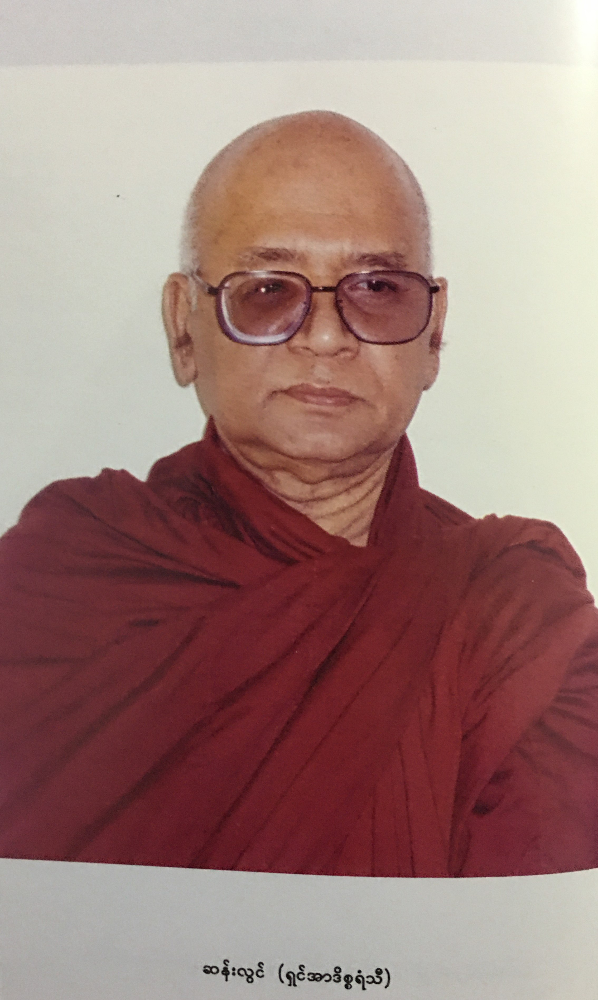

尊者 阿締佳嵐溪長老開示錄
Eighteen Days in Solitude
– Instructional Dhamma Talks in Retreat
By Venerable U Ādiccaramsī
尊者 鄔達摩長老Bhikkhu Uttamo
自緬甸語錄音帶譯為 英文
導言 (參考用譯文)
特別聲明：本參考用譯文疏漏、錯繆難免，讀者應慎思明辨。僅供法友參考；並祈藉此拋磚引玉，眾法友能共襄盛舉，共同圓滿此譯事。 Nanda 謹識。
Namo tassa bhagvato arahato sammāsambuddhassa

Venerable U Ādiccaramsī (1937-2002) Portrait
“Eighteen Days in Solitude” is not a famous novel like “The Hundred Days in Solitude” for entertainment, which you can't take anything with you after death. These were the instructional Dhamma talks on Samatha-Vipassanā practice. It was given in the year of 2002 during the 18 days retreat in Rangoon. Ven. U Ādiccaramsī, the meditation teacher was not well-known outside Burma either. But he was well-known in Burma as an author and Dhamma teacher; an interesting and colorful man in his life.
The following short biography came from two of his books, the famous and best seller, “The Story of a Man Who has Faith and Taken Refuge in the Triple Gems”. The second book was “A Man Walking on the Path of Spiritual Knowledge”, and from some of his talks. This short biography is not promoting the identity view which all Buddhists should be abandoned, but for a reflection on Dhamma. There were many things we can learn from his life. The Buddha always emphasized on wisdom (paññā). Without wisdom or wisdom faculty, human beings, out of ignorance and craving create a lot of problems in life, and in societies around the world.
He was born in 1937 as Sun Lwin in the south-western part of Burma. Being the only son to a Muslim parent, so when he was young, he was forced by his father to be educated by the Koran. He never easily accepted anything with blind faith without knowing them clearly. His father appointed a good teacher for Koran teaching. Because of his intelligent and philosophical mind always questioned about the existence of God and the Creation. He asked questions to his teacher who wouldn’t give the proper answers to satisfy his mind. At last he said to his father that he wouldn’t accept any religions without knowing clearly. (Here we can see the importance of free inquiry and direct experience which the Buddha always encouraged in the Kalama Sutta and others. Even with intelligence, human beings are not wise enough so that create a lot of human problems in today world.) This made his father very angry and later it broke up the family apart. After finishing his high school, he went to Rangoon. He worked at day time in a government office and studied at a night time university. There he met a Christian woman and fell in love with her. Out of love he wanted to become a Christian and studied Christianity (Lust is stronger than faith. Here was the same God and Creation). After over three years, with different views and feelings, they were separated. And then his mother arranged a Muslim woman for him. He married this woman out of respect for his mother. In his last year of B.A degree, he moved to Rangoon University and continued the study on Philosophy. For this purpose he resigned his job as a government staff and taught as a teacher at night-time schools.
From that period, he started writing romantic short stories. With his interest and sharp mind passed his B.A. degree with distinction in Philosophy on Ethics. This was the first time happened in the history of Philosophy Department. He continued his M.A degree and taught as a tutor at the Department. As a Philosophy teacher he was an atheist and influenced by Marxism-Leninism and Mao Tse-Tung Thought or communist literatures. He didn’t have a happy family life and it became degenerated and ended up with divorce (There were some reasons behind this. The most important one was the fanatic view of his Muslim wife). Later he met another young Buddhist Chinese woman who was one of his students. He married her because she resembled his first love whom he couldn’t forget (The main cause was they had strong kammic link from their past lives).
One day his teacher Professor Dr. U Khin Maung Win (Yale University graduate, later he became the Educational Minister) gave him an assignment for writing a textbook on Buddhist Ethic in Burmese. As a curriculum for students in Philosophy, he was already success in writing books and a bright person, but didn’t know much about Buddhism except in the Philosophy books. This was a great turning point in his life. This was also a very strange case because there were other Buddhist teachers in the Department. He came from the Muslim family and didn’t know much about Buddhism. The working of kamma was inconceivable. He had strong kammic link with Buddhism in his past lives.
So, he studied and researched diligently for many months with Buddhist texts in English and Burmese. Near the end of his research, his teacher told him to stop the project. The reason was his teacher wanted to send him to Northern Burma, the Kachin State as the head of philosophy Department, and an assistant lecturer. Even though he didn’t has the chance for writing the textbook, but gained the priceless knowledge of Buddhism. During these periods, he wrote some books on Philosophy; “ABC of Philosophy”, “Philosophers of the World”, “Chinese Philosophers”, “Russian Philosophers”, “Einstein”(a biography in two volumes), etc. He also studied world religions and wrote a book on world religions. With the knowledge on religions, he preferred Buddhism to more than others. But still he was not becoming a Buddhist yet. Because he still couldn’t accept the idea of rebirth and need to verify it. Later he encountered evidences for rebirth and the law of Kamma.
It mentioned an incident on rebirth in his second book on his life, “A Man Walking on the Path of Spiritual Knowledge”. As a young boy in the primary school, one day the teacher taught about Taunggnoo History (round about 14th or 15th century). The teacher told the story of a Burmese King from Ava (Inwa) Kingdom attacked the Kingdom of Taunggnoo (it was recorded in the history book). At the end of the story, he suddenly cried. The teacher asked him the reason. He only said to her that in his past life he was a Buddhist. In the evening after back home and told his mother what had happened. At that time he was the king of Ava and with the help of his teacher, a Burmese monk named Phamei Sayadaw conquered Taunggnoo kingdom. He told his mother in details of the episode. This was remembering one of his past lives as a young boy.
南無 薩瓦提 佛陀 阿羅漢 正等正覺者
尊者 U Ādiccaramsī（1937–2002）肖像
《獨處十八日》並非如《百年孤寂》般廣為人知的小說，也非為娛樂而作，更不是死後可帶走的什麼。這是有關止禪與觀禪修習的開示講記，於2002年在仰光進行為期十八日的禪修期間所說。U Ādiccaramsī尊者是一位禪修導師，雖在緬甸以外不甚知名，但在國內卻是知名的佛法導師與作家，其人生經歷亦極為豐富、獨特而具啟發性。
以下這篇簡短傳記節錄自他兩部著作，其一為暢銷與知名之作《一位具信仰並皈依三寶者的故事》，另一為《一位行走於智識之道上的人》，並輔以他部分開示內容。這篇傳記的撰寫，並非為了鼓吹「自我認同見」，因為這是所有佛弟子應當捨離的錯見；而是作為對法的省思與學習，因其一生中有諸多可供借鏡之處。佛陀始終強調智慧（paññā）的重要性；若缺乏智慧與慧根，人類將因無明與貪欲，在生命與世界各地的社會中製造無數問題。
他於1937年出生於緬甸西南部，原名Sun Lwin。身為穆斯林家庭的獨子，自幼即被父親強迫接受可蘭經教育。然而他不輕信任何事，總希望明辨真偽。父親為他聘請了良師教導可蘭經，但他天性聰慧且具哲思，經常質疑神的存在與創世說。他向老師提出諸多問題，卻始終得不到令他信服的答案。最終，他向父親表明：若無清楚了解，他不會接受任何宗教。（此處可見佛陀於《卡拉瑪經》中所提倡之自由探索與親證體驗之精神。即便擁有智慧，若未臻正智，人類仍可能製造諸多問題。）
此舉令其父大為震怒，甚至導致家庭分裂。高中畢業後，他前往仰光，白天在政府機關任職，夜間就讀夜校大學。在那裡他結識一位基督徒女子並墜入愛河，為愛情驅使，他甚至萌生改信基督教的念頭並開始研究（貪愛往往強於信仰，此處所涉仍為「上帝與創世說」的觀念）。然而三年後，因觀點與情感的分歧，兩人最終分開。之後，母親為他安排了一位穆斯林女子成婚，他為孝敬母親而答應婚事。
在攻讀文學士學位最後一年時，他轉入仰光大學繼續修讀哲學，並辭去政府工作，在夜校擔任教師。同一時期，他開始撰寫言情短篇小說。憑著他的興趣與敏銳頭腦，他以倫理學主修優異成績完成文學士學位，為哲學系歷史上首見之事。隨後，他繼續攻讀碩士學位並任系中助教。身為哲學教師，他當時是無神論者，深受馬克思—列寧主義與毛澤東思想等共產文獻影響。
他的婚姻生活並不幸福，最終破裂並離婚（其中主因之一，是其穆斯林妻子頑固的宗教觀念）。後來，他結識一位年輕的華人佛教徒女子，也是他其中一位學生，因她與他初戀情人容貌相似（實則由於兩人有強烈的宿世業緣），他便與她結婚。
有一天，他的老師、曾留學耶魯大學、後來擔任緬甸教育部長的U Khin Maung Win教授，指派他撰寫一本緬文版《佛教倫理學》教材，作為哲學系學生之課程用書。雖然他在寫作上已頗有成就，亦具備聰穎才智，但當時對佛教的了解僅止於哲學書中的篇章。這項任務成為他人生的重大轉捩點。此事亦頗為奇特，因系中尚有其他佛教背景之教師，但這任務卻由來自穆斯林家庭、對佛法知之甚少的他承擔。這正顯示出業力的不可思議——他與佛教有深厚的過去世業緣。
於是他勤奮研讀英文與緬文的佛教典籍，歷時數月。研究即將告一段落時，老師卻告訴他需終止該計劃。原因是老師欲派他前往緬北克欽邦擔任哲學系主任兼助理講師。雖未能完成教材寫作，但他因此獲得了珍貴無比的佛法知識。
其間，他撰寫了多本哲學書籍，如《哲學入門ABC》、《世界哲人》、《中國哲學家》、《俄羅斯哲學家》、《愛因斯坦傳》（兩冊）等。他亦研習世界宗教，並著有《世界宗教》一書。在比較各大宗教後，他更傾心於佛教。然而當時他尚未皈依，因他對輪迴觀仍有疑，須尋求驗證。後來，他逐漸遇見了關於輪迴與業果法則的諸多證據。
在他第二本傳記《行走於智識之道上的人》中，記述了一則與輪迴相關的事件。他年幼時讀小學，有一日老師授課談及東吳歷史（約十四、十五世紀），提到一位緬甸阿瓦王朝的國王攻打東吳國的史實。故事說到結尾時，他忽然哭了起來。老師詢問原因，他只回答說：他在前世是一位佛教徒。當晚返家，他將此事告訴母親，並詳細敘述前世記憶——他曾是阿瓦王，在一位名為Phamei Sayadaw的緬甸比丘協助下，征服了東吳國。這是他童年時一次清晰記得過去世的經歷。
～～～～～～～～～～～～～～～～～～～～～～～～～～
皈敬彼世尊、阿羅漢、正等覺者
尊者 鄔・阿迪伽冉西 (1937-2002) 肖像
《孤獨十八日》並非如《百年孤寂》般引人入勝的小說，供人娛樂，畢竟逝後萬般皆成空。此乃關於止觀禪修的教導開示，於2002年在仰光舉行的十八日禪修期間講授。禪修老師尊者 鄔・阿迪伽冉西在緬甸境外並不廣為人知，但在緬甸國內卻是知名的作家和佛法老師；他的人生充滿趣味且多采多姿。
以下簡短的傳記摘錄自他的兩本書，其中一本是廣受歡迎的暢銷書《一個對三寶具足信心並皈依者的故事》，另一本是《行走在靈性知識道路上的人》，以及他的一些開示。這篇簡短的傳記並非為了宣揚所有佛教徒都應捨棄的「我見」，而是為了對佛法進行反思。我們可以從他的一生中學習到許多。佛陀總是強調智慧（paññā）。缺乏智慧或智慧能力，人類會因無明和貪愛而在生活和世界各地的社會中製造許多問題。
他於1937年出生於緬甸西南部，名為孫倫。身為穆斯林父母的獨子，他從小就被父親強迫學習《古蘭經》。他從不輕易盲信任何事物，總要清楚了解後才會接受。他的父親為他聘請了一位優秀的《古蘭經》老師。然而，他聰穎且富於哲思的頭腦總是質疑上帝的存在和創世的緣由。他向老師提出疑問，但老師無法給予令他滿意的答案。最終，他對父親說，在徹底了解之前，他不會接受任何宗教。（在此，我們可以看見佛陀在《迦拉瑪經》和其他經典中始終鼓勵的自由探索和直接體驗的重要性。即使擁有智慧，人類仍然不夠明智，以至於在當今世界製造了許多人類問題。）這使得他的父親非常生氣，最終導致家庭破裂。高中畢業後，他前往仰光，白天在政府部門工作，晚上則在大學學習。在那裡，他遇到了一位基督徒女子並愛上了她。出於愛，他想成為一名基督徒並開始研究基督教（慾望比信仰更強烈。這裡同樣存在著上帝和創世的說法）。三年多後，由於觀點和感受的差異，他們分手了。之後，他的母親為他安排了一位穆斯林女子。出於對母親的尊重，他與這位女子結婚。在攻讀文學士學位的最後一年，他轉到仰光大學繼續研讀哲學。為此，他辭去了政府部門的工作，轉而在夜間學校擔任教師。
從那時起，他開始創作浪漫的短篇小說。憑藉他的興趣和敏銳的頭腦，他以優異的成績獲得了哲學（倫理學方向）的文學士學位。這在哲學系的歷史上是第一次。他繼續攻讀碩士學位，並在系裡擔任助教。作為一名哲學老師，他是一位無神論者，並受到馬克思列寧主義和毛澤東思想或共產主義文獻的影響。他的家庭生活並不幸福，逐漸惡化並最終以離婚告終（這背後有一些原因，其中最重要的是他穆斯林妻子的狂熱觀點）。後來，他遇到另一位年輕的華裔佛教徒女子，她是他的學生之一。他娶了她，因為她讓他想起他無法忘懷的初戀（主要原因是他們過去世有著強烈的業力連結）。
有一天，他的老師吳欽貌溫教授（耶魯大學畢業，後來成為教育部長）指派他撰寫一本關於緬甸語佛教倫理學的教科書。作為哲學系學生的課程教材，他已經成功地撰寫了書籍，並且是一位聰明的人，但他對佛教的了解僅限於哲學書籍中的內容。這成為他人生中的一個重大轉捩點。這也是一個非常奇特的案例，因為系裡還有其他佛教老師。他來自穆斯林家庭，對佛教知之甚少。業力的運作真是不可思議。他在過去世與佛教有著強烈的業力連結。
因此，他勤奮地研讀和研究了數月的英文和緬甸文佛教典籍。在他研究接近尾聲時，他的老師告訴他停止這個項目。原因是他的老師想派他到緬甸北部的克欽邦擔任哲學系主任和助理講師。儘管他沒有機會完成教科書的撰寫，但他卻獲得了無價的佛教知識。在此期間，他撰寫了一些哲學書籍，如《哲學入門》、《世界哲學家》、《中國哲學家》、《俄國哲學家》、《愛因斯坦傳》（兩卷本）等。他還研究了世界宗教，並撰寫了一本關於世界宗教的書籍。憑藉對宗教的了解，他更偏愛佛教。但他當時還沒有成為佛教徒，因為他仍然無法接受輪迴的觀念，需要加以驗證。後來，他遇到了關於輪迴和業力法則的證據。
在他的第二本自傳《行走在靈性知識道路上的人》中，提到了他童年時期發生的一件關於輪迴的事件。小學時，有一天老師講述東吁王朝的歷史（約在十四或十五世紀）。老師講述了阿瓦（因瓦）王朝的一位緬甸國王攻打東吁王朝的故事（歷史書有記載）。故事講完後，他突然哭了起來。老師問他原因，他只對老師說，他前世是一位佛教徒。晚上回到家後，他把發生的事情告訴了母親。當時他是阿瓦國王，在他的老師，一位名叫帕梅西亞多的緬甸僧侶的幫助下，征服了東吁王朝。他詳細地向母親講述了當時的情景。這是一位小男孩憶起他前世為國王的經歷。
Another incident was happening around 1971 or 1972, and he was still a teacher in Rangoon University. A spirit possessed a spirit worshipper and wanted to meet him. At that time he was a materialist (influenced by communism) and rejected to see the spirit and took them as nonsense. After some days passed by, the spirit possessed again to the same man and requested to see him and wanted to give him something. He rejected it again, but this time his wife persuaded him to go and see what would happen. As soon as he was arriving to the spirit house, the spirit possessed the same man instantly and told him about the story.
She was a kind of vemānika peta (a kind of earthly supernatural spirit) and his daughter in past life. At that time he was a king in Shan State (something like a māhāraja in India). After she passed away in that life and born as a vemānika peta and looked after the treasures they left behind. He didn’t believe what she said and asked her to show him the evidences. So, the spirit with her psychic power gave him some ancient silver coins with a peacock symbol and letters on it in front of them via the possessed man. These ancient silver coins were from the time of the last Burmese Kingdom, i.e., Mandalay Era. The spirit granted him for other wishes and he asked for some ancient Buddha images. After a week passing by, they met again. This time the spirit gave him nine ancient Buddha images and some were made with gold.. As a vemānika peta, she was searching for him. She asked permission from him to become his daughter again. (Beings have strong attachment to each other.) She made a prediction to him that after she was born and he would resign his job as a university teacher. This youngest daughter was born to him in 1972 and later he also resigned his job as a teacher.
After resigned his post as a teacher and he entered the movie films business. He studied books on movie art and then directed some movie films and opened classes for acting. One day during a class lecture on acting, a group of five persons were acting wrongly. So, he asked them to look into his eyes and talked to them how to do it. And then these people fell into the subconscious states. He was surprised and did not know what to do with them. But instantly he remembered that they were in the hypnotic states. He had been written a book on hypnotic before by reading some books on them. Now, he used this chance to make a test. He ordered them to cry and they cried. Asked them to laugh and laughing heartedly. Now knowing that he had this ability and from that day onwards he hypnotized people if had any chance. And also found out that he could cure their past lives related diseases which medicines had no effects. (This point is very well known in the west nowadays. Some psychologists and medical doctors had made researches and already written some books on them.)
One time he hypnotized one of his old university students. This male student in the hypnotic state told his past life which had connection with him. So, he was very interested and asked more information from him. He said that in that period he was their teacher and teaching on the art of warfare. And he had three daughters and the youngest one was now his present wife. It was a great shock for him, like a hammer hitting on his head. He couldn’t believe it. So, he had to try again with another student who was mentioned by the first student. This student also mentioned the same episode in the hypnotic state. He still unsatisfied with the result and wanted to try on his wife. At first his wife was rejected for sometimes. In the end he succeeded and in the hypnotic state also she confirmed the same episode as mentioned by the two students.
He continued to ask her where about in her last life from this life. In her last life, she was the daughter of a well-known traditional doctor in a city in Burma. Later she ordained as a nun. So, it was easy for him to make inquiries by following the story. After some inquiries, it was confirmed what she had said before. It solved his doubts on rebirth and the law of kamma. During the periods of his treatments to illnesses with hypnotism and made records of them with the photos of these people, later he wrote a book about them. Publication censor-board did not allow to publish this book. [It's quite a strange censorship by a Buddhist government. Even western scientists were making researches about rebirths (for them was reincarnations) quite a long time ago and they confirmed it also. These are not superstitions and even helping to understand rebirths and law of kamma which are important for Buddhism. The education on law of Kamma and Rebirth are very important for human knowledge.]
Later he became a Buddhist and wrote a book on his life, entitled “The Story of a Man Who has Faith and Taken Refuge in the Triple Gems.” It came out in 1989 and became a best seller book in Burma. Reprinted quite a few times and made him rich and very well known. It had four volumes; volume I “Three World Religions and Sun Lwin”, volume II “World Philosophy and Sun Lwin, volume III “The Buddhist Texts and Sun Lwin” and volume IV “On the Way to Perfection and Sun Lwin”. The Volume IV has six chapters, which are subtitled as follows:
① The clues of round of existence (samsara) and law of cause and effect
② The questions on past life problem and answers from Buddhism
③ Hypnotism, the process of rebirth, life continuum mind (bhavaṅga citta) and past lives relationship
④ Before realization always encounter with mistakes
⑤ Fake refuge and the real refuge (saraṇāgamana)
⑥ Some experiences on the way to perfection
With the sub-titled chapters in volume IV, we can justify the popularity of this autobiography. The whole book can give the readers many tastes of feeling which are romantic, philosophy, science, religion, and spiritual, etc. The third volume ended up with his desire to walk the bodhisatta path. During his periods of following the bodhisatta way, he was associated with people who were practicing the worldly Dhamma, such as mantras, mandalas, for long life and psychic power (gandhārī vijjā). So, he was misleading by these people. Because of following the bodhisatta way, he only practiced samatha and never vipassanā. Later he reflected his desire and vow carefully after reading some books about the bodhisatta path, both Theravada and Mahayana. And he found out that he didn’t have any qualities of them mentioned there in the Theravada texts.
One day he went to Sayagyi U Ba Khin’s Centre for ten days retreat. And he penetrated the four Noble Truths with direct experience, let go of his desire for the bodhisatta path. Described this experience in his last book, “Walking on the Path of Spiritual Knowledge” (came out in 2003). Later he gave up his wealth and family and ordained as a Buddhist monk in 1994. His ordination had two purposes: continuing his practice and giving lectures on Dependent Origination (Paṭiccasamuppāda) around Burma. The last purpose came from Mogok Sayadaw’s and Ledi Sayadaw’s teachings. After ordaining, he went to Taunggnoo, stayed in a forest and practising alone there for sometime.
Later he established a meditation centre there. Also, he was busy with moving across Burma and giving lectures on Paṭiccasamuppāda to all Buddhists who were inviting him. He was so popular that had a lot of invitations. Maybe overworked and health problems, he passed away in 2002. These instructional talks were given in 2002, from 17th October to 3rd November. It even might be his last talks. He passed away in lower Burma. In one of his talks he mentioned to end his biography by writing on his life as a monk. He did not finish his biography and would never be. But one thing is sure that he will finish his spiritual journey in the near future because he had already on the straight and right path without any hindrances anymore.
另一件事發生於1971或1972年間，當時他仍任教於仰光大學。有一位靈媒被靈體附身，聲稱想要見他。當時的他仍是一位唯物論者（受共產思想影響），斷然拒絕與靈體接觸，並視之為荒謬之事。數日後，該靈媒再度被附身，靈體再次要求與他會面，並表示想贈送某物。他再次拒絕，但這次在妻子的勸說下，他決定前往一探究竟。
當他抵達靈屋時，該人立即被靈體附身。靈體開始講述一段往事——她是一種「天界餓鬼」（vemānika peta，擁有特殊力量的地居靈體），曾在過去世是他的女兒。當時他是撣邦的一位國王（類似印度的摩訶羅闍）。在她那一世命終後，投生為這種靈體，守護著前世遺留的財寶。他對此將信將疑，要求靈體提供證據。
於是，該靈體以神通力透過被附身者，當場取出一些帶有孔雀圖案與文字的古代銀幣。這些銀幣來自緬甸最後一個王朝——曼德勒王朝時期。靈體並允許他提出其他請求，他便請求獲得一些古佛像。一週後他們再度會面，這次靈體贈與他九尊古佛像，其中幾尊是以黃金打造。
作為一位「天界餓鬼」，她一直在尋找他。她請求他允許其再次轉生為他的女兒（眾生間因執取而深有連結）。她並預言，當她轉生後，他將辭去大學教師的職務。果然，這位么女於1972年出生，而他也在不久後辭去了教職。
辭去教師職務後，他投身電影事業。他自學電影藝術，執導數部電影，並開設表演課程。有一天，在一次表演課中，有五名學生表演錯誤。他要求他們看著他的眼睛，並告訴他們如何演繹。此時，這五人突然陷入潛意識狀態。他驚訝之餘，忽然想到這可能是催眠狀態。他曾閱讀過一些催眠術書籍並撰寫過相關書籍。
於是，他趁此機會進行測試。他命令他們哭泣，他們果然哭泣；命令他們大笑，他們便開懷大笑。他意識到自己具備此能力，從此只要有機會，便對人施以催眠。他也發現，自己能夠治癒某些與前世相關、藥物無法治癒的疾病。（此一領域在現代西方已相當知名，許多心理學家與醫生對此進行研究並出版專書。）
有一次，他催眠一位大學舊生，該生在催眠狀態下敘述其與他有關的前世經歷。這使他大感興趣，進一步探問詳情。對方說那一世他是他們的老師，教授兵法，並有三個女兒，最小的正是他現世的妻子。這使他震驚不已，彷如當頭棒喝。他難以置信，遂再次催眠另一位被前者提及的學生，此人亦在催眠中說出相同的往事。他仍不滿足，決定對自己的妻子進行催眠。起初妻子堅決拒絕，但終於同意。結果在催眠狀態下，她也說出了與兩位學生相同的前世經歷。
他繼續詢問妻子此生前世的具體細節。妻子說她前世是緬甸某城市一位知名傳統醫師的女兒，後來出家為尼。依據此線索，他開始進行調查，結果證實她所言屬實。這段經歷讓他徹底解除了對輪迴與業報的疑惑。
在他以催眠治療各種疾病期間，他為每位病患拍照存證並詳細記錄，後來更撰寫成書。然而出版審查機構卻不允許發表此書。（這種審查實在令人費解，尤其是在一個佛教國家。其實早在多年以前，西方科學家即已研究轉世現象（雖稱為「再生」），並有實證出版。這些並非迷信，反有助於人們理解輪迴與業果法則，對佛法意義重大。教育大眾有關「業與輪迴」的知識，實乃當代極為重要之事。）
後來他皈依佛教，並出版自傳《一位具信仰並皈依三寶者的故事》。此書於1989年問世，在緬甸成為暢銷書，多次再版，使他聲名大噪並財富倍增。全書共四冊：
第一冊：《三大宗教與Sun Lwin》
第二冊：《世界哲學與Sun Lwin》
第三冊：《佛教典籍與Sun Lwin》
第四冊：《通往圓滿之道與Sun Lwin》
其中，第四冊共分為六章，副標題如下：
① 輪迴與因果法則的線索
②
有關前世問題之提問與佛教解答
③
催眠術、再生過程、有分心（bhavaṅga
citta）與前世關係
④
覺悟之前，常會誤入歧途
⑤
虛妄的皈依與真正的皈依（saraṇāgamana）
⑥
圓滿之道上的若干經驗
由這些副標題，可見該自傳受歡迎的原因。全書內容涵蓋情感、哲學、科學、宗教與心靈等多層面，使讀者得以多角度品味人生。第三冊以他立願行菩薩道作結。在追求菩薩道的期間，他與一些修習世俗法門者有所交往，諸如咒語、壇城、延壽法、神通術（gandhārī vijjā）等。結果被這些人誤導。因追求菩薩道，他僅修習止禪，而未修觀禪。
後來，他詳讀南傳與大乘關於菩薩道的經論，反思自己的願望與發心，最終明白自己並不具備南傳經典所述的菩薩諸種資糧與條件。
有一天，他參加U Ba Khin 老師中心為期十天的禪修營，於其中親證四聖諦的真實，從而放下對菩薩道的執著。他在其最後一部著作《行走於智識之道上》（2003年出版）中詳述此一經驗。
1994年，他捨棄家庭與財產，出家為僧。他出家的目的有二：一是繼續實修，二是巡迴緬甸弘法講解緣起法（Paṭiccasamuppāda），後者受到莫哥尊者與雷迪尊者教導的啟發。
出家後，他前往東吳（Taunggnoo）獨自居住於森林中修行，後來於當地創建禪修中心，並開始在緬甸各地講解緣起法，廣受歡迎，應邀不斷。也許因過度勞累與健康問題，他於2002年辭世。
這部《獨處十八日》的教學講記，正是在他圓寂前的2002年10月17日至11月3日所開示，可能也是他最後的法語之一。他圓寂於緬甸南部。在一篇講記中，他曾說欲以記述其出家生活作為傳記的終章。雖未竟其書，但有一點可確信：他將於不久的將來圓滿其心靈旅程，因為他已走在正道之上，無任何障礙所阻。
～～～～～～～～～～～～～～～～～～～～～～～～～～
另一次事件發生在大約 1971 或 1972 年，當時他仍在仰光大學任教。一個附身在乩童身上的靈魂想要見他。那時他是一位唯物主義者（受共產主義影響），拒絕見那個靈魂，認為那些都是無稽之談。幾天後，那個靈魂再次附身在同一個人身上，請求見他並想給他一些東西。他再次拒絕了，但這次他的妻子說服他去看看會發生什麼事。他一到神壇，那個靈魂立刻附身在同一個人身上，並向他講述了來龍去脈。
她是一種屬於欲界天神（vemānika peta，一種地居的超自然靈體），也是他前世的女兒。當時他是撣邦的一位國王（類似印度的摩訶羅闍）。她在前世過世後投生為欲界天神，並照看他們留下的財寶。他不相信她所說的話，要求她拿出證據。於是，那個靈魂藉由附身的人，當著他們的面，用她的神通力給了他一些刻有孔雀圖案和文字的古代銀幣。這些古代銀幣是最後一個緬甸王朝，即貢榜王朝時期的。那個靈魂答應了他其他的願望，他請求得到一些古代佛像。一周後，他們再次見面。這次，那個靈魂給了他九尊古代佛像，其中一些是金製的。作為欲界天神，她一直在尋找他。她請求他的允許，再次成為他的女兒。（眾生之間有著強烈的執著。）她預言他會在她出生後辭去大學教師的工作。這個小女兒於 1972 年出生，後來他也辭去了教師的工作。
辭去教師職位後，他進入了電影業。他研讀電影藝術的書籍，然後執導了一些電影，並開設了表演課程。有一天，在一次表演課上，一組五個人表演得不對。於是，他讓他們看著他的眼睛，並告訴他們該怎麼做。然後，這些人進入了潛意識狀態。他感到驚訝，不知道該怎麼辦。但他立刻想起他們處於催眠狀態。他之前讀過一些關於催眠的書籍，並寫了一本關於催眠的書。現在，他利用這個機會進行了一次測試。他命令他們哭泣，他們就哭了。他讓他們大笑，他們就開懷大笑。現在他知道自己有這種能力，從那天起，只要有機會，他就催眠別人。他也發現他可以治癒他們與前世相關的疾病，而這些疾病是藥物無效的。（這一點在當今西方非常有名。一些心理學家和醫生已經進行了研究，並撰寫了一些相關書籍。）
有一次，他催眠了他以前的一位大學生。這位男學生在催眠狀態下講述了他與他有關的前世。因此，他非常感興趣，並向他詢問了更多資訊。他說，在那個時期，他是他們的老師，教授戰爭藝術。他有三個女兒，最小的一個就是他現在的妻子。這對他來說是一個巨大的震驚，就像一把錘子敲在他的頭上。他簡直不敢相信。因此，他不得不再次嘗試另一個被第一個學生提及的學生。這個學生在催眠狀態下也提到了同樣的事情。他仍然對結果不滿意，想在妻子身上試試。起初，他的妻子拒絕了一段時間。最後，他成功了，在催眠狀態下，她也證實了與那兩個學生所說的相同經歷。
他繼續問她，她今生前一世的去處。在她前一世，她是緬甸一個城市裡一位著名傳統醫生的女兒。後來她出家為尼。因此，他很容易根據她所說的故事進行調查。經過一番調查，證實了她之前所說的話。這消除了他對輪迴和業力法則的疑慮。在他用催眠術治療疾病的期間，他記錄了這些案例，並附有這些人的照片，後來他寫了一本關於這些案例的書。出版審查委員會不允許出版這本書。[對於一個佛教政府來說，這是一個相當奇怪的審查。即使西方科學家很久以前就一直在研究輪迴（對他們來說是轉世），並且也證實了這一點。這些並非迷信，甚至有助於理解對佛教很重要的輪迴和業力法則。關於業力法則和輪迴的教育對於人類知識非常重要。]
後來他成為了一名佛教徒，並寫了一本關於他生平的書，名為《一個對三寶具足信心並皈依者的故事》。該書於 1989 年出版，並成為緬甸的暢銷書。再版多次，使他變得富有且非常有名。該書共有四卷；第一卷《三大世界宗教與孫倫》，第二卷《世界哲學與孫倫》，第三卷《佛教經典與孫倫》，第四卷《邁向圓滿之道與孫倫》。
第四卷共有六章，副標題如下： ① 生死輪迴（samsara）與因果法則的線索 ② 關於前世問題的疑問以及佛教的解答 ③ 催眠、輪迴的過程、生命相續心（bhavaṅga citta）與前世的關係 ④ 在證悟之前總會遇到錯誤 ⑤ 虛假的皈依與真正的皈依（saraṇāgamana） ⑥ 邁向圓滿之道的一些體驗
憑藉第四卷的副標題章節，我們可以理解這本自傳的受歡迎程度。整本書能讓讀者體驗到浪漫、哲學、科學、宗教和靈性等多種感受。第三卷以他渴望行菩薩道結束。在他遵循菩薩道的期間，他與一些修習世俗佛法的人交往，例如為了長壽和神通力（gandhārī vijjā）而修持咒語和壇城。因此，他被這些人誤導了。由於遵循菩薩道，他只修習止禪，從未修習觀禪。後來，在閱讀了一些關於南傳和北傳菩薩道的書籍後，他仔細反思了自己的願望和誓言。他發現自己並不具備南傳經典中所描述的任何菩薩的特質。
有一天，他前往雪淨大師（Sayagyi U Ba Khin）的中心進行為期十天的禪修。他通過直接的體驗證悟了四聖諦，放下了對菩薩道的渴望。他在他的最後一本書《行走在靈性知識道路上》（2003 年出版）中描述了這次經歷。後來，他放棄了他的財富和家庭，並於 1994 年出家為佛教僧侶。他出家有兩個目的：繼續他的修行，以及在緬甸各地講授緣起法（Paṭiccasamuppāda）。後一個目的是受到莫哥大師（Mogok Sayadaw）和雷迪大師（Ledi Sayadaw）教導的啟發。出家後，他前往東吁，住在森林裡獨自修行了一段時間。
後來，他在那裡建立了一個禪修中心。此外，他還忙於在緬甸各地奔波，向所有邀請他的佛教徒講授緣起法。他非常受歡迎，收到了許多邀請。或許是因為過度勞累和健康問題，他於 2002 年過世。這些教學開示是在 2002 年 10 月 17 日至 11 月 3 日期間講授的。這甚至可能是他最後的開示。他在下緬甸過世。在他的一次開示中，他提到要以寫下他作為僧侶的生活來結束他的傳記。他沒有完成他的傳記，也永遠不會完成了。但可以肯定的是，他將在不久的將來完成他的靈性之旅，因為他已經走上了筆直正確的道路，不再有任何障礙。